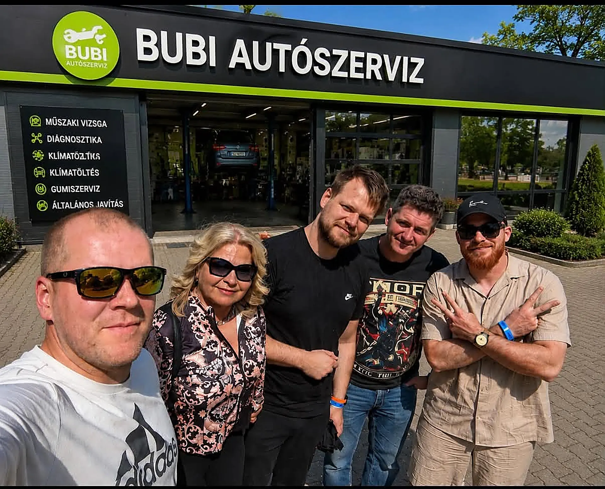
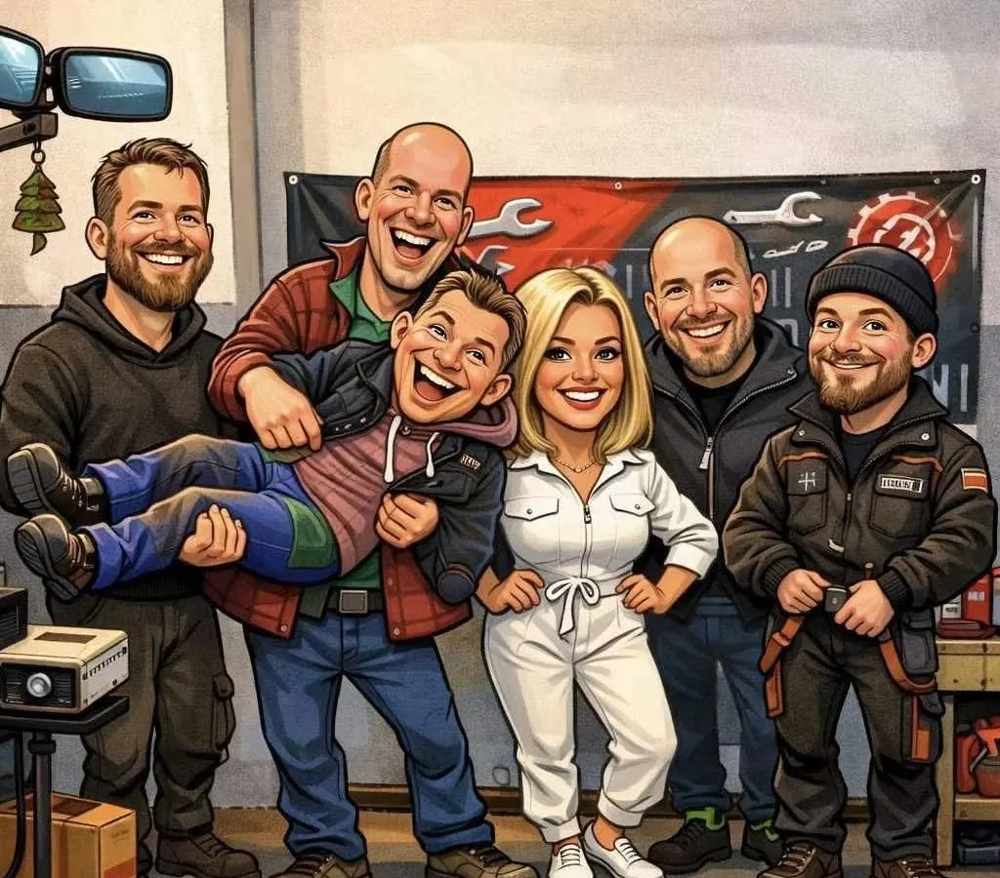

Műszaki vizsga
Személyautók időszakos műszaki vizsgája Komlón. A vizsgát Bálint végzi.
Átmegy az autóm?
Vizsga, eredetiségvizsga és javítás egy címen. Nálunk a műszaki vizsga nem formalitás, hanem felelősség.
A Bubi Autószerviz márkafüggetlen szerviz és vizsgaállomás. Ha a vizsga előtt valamit javítani kell, az autó nálunk marad, nem kell máshova vinnie.
Személyautók időszakos műszaki vizsgája Komlón. A vizsgát Bálint végzi.
Átmegy az autóm?Használt autó vásárlásakor, átírás előtt. Időpontot érdemes előre kérni.
Időpontot kérekBármilyen márkájú személyautóra.
A legtöbb autó apróságon bukik el: egy kiégett izzón, egy kopott gumin. Nézze át otthon, mi szokott a vizsgán gondot okozni, és jelölje be, ami gyanús. Azt a vizsga előtt átnézzük és megjavítjuk.
Ha a vizsga előtt javítani kell, ugyanitt megcsináljuk: a szerviz és a vizsgaállomás egy címen van.
Jelölje be, amiben nem biztos:
Ha semmit nem jelöl, az egész autót átnézzük.
Általános tájékoztató, nem teljes lista: a vizsgán ennél több mindent ellenőriznek.
A műszaki vizsgára hozza magával:
Forrás: a kormányhivatal tájékoztatója a járművek időszakos műszaki vizsgájáról.
Eredetiségvizsgát jellemzően akkor kérnek, ha:
Vannak kivételek, például öröklésnél. Hogy az Ön esetében kell-e, és mit hozzon, telefonon megmondjuk.

Komlói, márkafüggetlen szerviz vagyunk, fiatalos csapattal. 2026 nyarán tiszta lappal, új csapattal folytattuk.
Egy vállalkozásban a legfontosabb érték a bizalom. Ha ez megrendül, azt nem szabad a szőnyeg alá söpörni. Inkább új alapokra kell építeni.
Július 1-től a műszaki vizsgáztatást Bálint végzi. Három tapasztalt, megbízható, lelkiismeretes szerelőnkkel pedig megpróbálunk maximálisan kiszolgálni.
★★★★★„Udvarias, segítőkész, hozzáértő csapat. Rövid határidővel kapok mindig időpontot, amit be is tartanak. Gyorsan, jól és korrekt áron dolgoznak.”
★★★★★„Korrektek, rugalmasak, segítőkészek! Az árak rendben vannak… Időpont is pár napon belül, sőt van, hogy pár órán belül is van.”
Írja meg, mivel jönne, és visszahívjuk egy időponttal. Gyorsabb, ha telefonon jelentkezik be:
+36 20 549 1385Vezetékes: (06 72) 484 506
Igen, érdemes. Hívja a +36 20 549 1385-ös számot, vagy kérjen időpontot az oldalon. Az ügyfeleink tapasztalata szerint időpont általában pár napon belül, néha aznap is van.
Igen. A Bubi Autószervizben műszaki vizsga és eredetiségvizsga is van, ugyanazon a címen: Komló, Bartók Béla u. 28.
Igen. A vizsgaállomás és a szerviz egy címen van: fék, futómű, futóműbeállítás, kipufogó, motor és gumi. Az autót nem kell máshova vinni.
A Bubi Autószerviz márkafüggetlen szerviz, bármilyen márkájú személyautóval megkeresheti.
Hétfőtől csütörtökig 8 és 17 óra között, pénteken 8 és 15 óra között. Szombaton és vasárnap zárva.
| Hétfő | 8:00–17:00 |
| Kedd | 8:00–17:00 |
| Szerda | 8:00–17:00 |
| Csütörtök | 8:00–17:00 |
| Péntek | 8:00–15:00 |
| Szombat | zárva |
| Vasárnap | zárva |